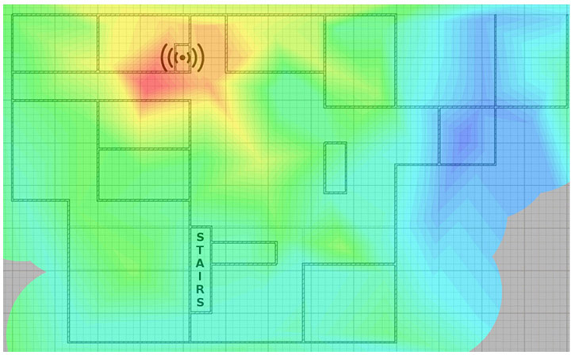

Table of Contents for
CompTIA Security+ All-in-One Exam Guide, Sixth Edition (Exam SY0-601)), 6th Edition
- Cover (01:09 mins)
- Title Page (01:09 mins)
- Copyright Page (03:27 mins)
- Dedication (01:09 mins)
- About the Authors (04:36 mins)
- Contents (19:33 mins)
- Preface (02:18 mins)
- Acknowledgments (01:09 mins)
- Introduction (12:39 mins)
-
Part I Threats, Attacks, and Vulnerabilities (01:09 mins)
- Chapter 1 Social Engineering Techniques (35:39 mins)
- Chapter 2 Type of Attack Indicators (37:57 mins)
- Chapter 3 Application Attack Indicators (33:21 mins)
- Chapter 4 Network Attack Indicators (39:06 mins)
- Chapter 5 Threat Actors, Vectors, and Intelligence Sources (44:51 mins)
- Chapter 6 Vulnerabilities (31:03 mins)
- Chapter 7 Security Assessments (23:00 mins)
- Chapter 8 Penetration Testing (25:18 mins)
-
Part II Architecture and Design (01:09 mins)
- Chapter 9 Enterprise Security Architecture (26:27 mins)
- Chapter 10 Virtualization and Cloud Security (25:18 mins)
- Chapter 11 Secure Application Development, Deployment, and Automation Concepts (27:36 mins)
- Chapter 12 Authentication and Authorization (33:21 mins)
- Chapter 13 Cybersecurity Resilience (39:06 mins)
- Chapter 14 Embedded and Specialized Systems (41:24 mins)
- Chapter 15 Physical Security Controls (49:27 mins)
- Chapter 16 Cryptographic Concepts (42:33 mins)
-
Part III Implementation (01:09 mins)
- Chapter 17 Secure Protocols (20:42 mins)
- Chapter 18 Host and Application Security (46:00 mins)
- Chapter 19 Secure Network Design (67:51 mins)
- Chapter 20 Wireless Security (25:18 mins)
- Chapter 21 Secure Mobile Solutions (43:42 mins)
- Chapter 22 Implementing Cloud Security (24:09 mins)
- Chapter 23 Identity and Account Management Controls (33:21 mins)
- Chapter 24 Implement Authentication and Authorization (37:57 mins)
- Chapter 25 Public Key Infrastructure (55:12 mins)
- Part IV Operations and Incident Response (01:09 mins)
- Part V Governance, Risk, and Compliance (01:09 mins)
- Part VI Appendixes and Glossary (01:09 mins)
- Glossary (65:33 mins)
- Index (67:51 mins)
CHAPTER 20
Wireless Security
In this chapter, you will
• Learn about wireless cryptographic and authentication protocols
• Learn about methods and installation considerations
Wireless is increasingly the way people access the Internet. Because wireless access is considered a consumer benefit, many businesses add wireless access points to lure customers into their shops. With the rollout of fifth-generation (5G) cellular networks, people are also increasingly accessing the Internet from their mobile phones. The massive growth in popularity of nontraditional computers such as netbooks, e-readers, and tablets has also driven the popularity of wireless access.
As wireless use increases, the security of the wireless protocols has become a more important factor in the security of the entire network. As a security professional, you need to understand wireless network applications because of the risks inherent in broadcasting a network signal where anyone can intercept it. Sending unsecured information across public airwaves is tantamount to posting your company’s passwords by the front door of the building. This chapter looks at several current wireless protocols and their security features.
Certification Objective This chapter covers CompTIA Security+ exam objective 3.4: Given a scenario, install and configure wireless security settings.
Cryptographic Protocols
Wireless networks, by their very nature, make physical security protections against rogue connections difficult. This lack of a physical barrier makes protection against others eavesdropping on a connection also a challenge. Cryptographic protocols are the standards used to describe cryptographic methods and implementations to ensure interoperability between different vendors’ equipment.
The history of cryptographic protocols in wireless begins with Wired Equivalent Privacy (WEP) and then transitions to Wi-Fi Protected Access (WPA), but both of these fell to poor design. The designers of the 802.11 protocol attempted to maintain confidentiality in wireless systems by introducing WEP, which uses a cipher to encrypt the data as it is transmitted through the air. WEP was initially a success, but over time several weaknesses were discovered in this protocol. WEP encrypts the data traveling across the network with an RC4 stream cipher, attempting to ensure confidentiality. The flaw in WEP was that the initialization vector was of insufficient length to protect the channel.
The first standard to be used in the market to replace WEP was WPA. This standard uses the flawed WEP algorithm with the Temporal Key Integrity Protocol (TKIP). TKIP works by using a shared secret combined with the card’s MAC address to generate a new key, which is mixed with the initialization vector (IV) to make per-packet keys that encrypt a single packet using the same RC4 cipher used by traditional WEP. This overcomes the WEP key weakness, as a key is used on only one packet.
Although both WEP and WPA were flawed, they led to WPA2, and eventually WPA3, both of which are in use today. If you find the older protocols still in use, understand that they do not provide any substantial level of security and should be upgraded.
Wi-Fi Protected Access 2 (WPA2)
IEEE 802.11i is the standard for security in wireless networks and is also known as Wi-Fi Protected Access 2 (WPA2). It uses 802.1X to provide authentication and uses Advanced Encryption Standard (AES) as the encryption protocol. WPA2 uses the AES block cipher, a significant improvement over WEP and WPA’s use of the RC4 stream cipher. WPA2 specifies the use of the Counter Mode with CBC-MAC Protocol (in full, the Counter Mode with Cipher Block Chaining–Message Authentication Codes Protocol, or simply CCMP). CCMP is described later in this chapter.
While WPA2 addressed the flaws in WPA and was the de facto standard for many years on wireless networks that were serious about security, it too fell to a series of issues, leading to the development of WPA3. WPA2 comes with a variety of methods to set up the shared key elements, and those are described later in the chapter. The WPA2-Personal passphrase can be cracked using brute force attacks. Even worse, once a hacker captures the data from the airwaves, the actual password cracking can occur offline on a more powerful, dedicated machine. Any encrypted messages they recorded can then be decrypted later, thus yielding passwords and other sensitive data.
WPA2 comes in two flavors: WPA2-Personal and WPA2-Enterprise. WPA2-Personal is also called WPA2-PSK because it uses authentication based on a pre-shared key (PSK), which allows home users without an enterprise authentication server to manage the keys. To use WPA2-PSK on a network, the router is given the pre-shared key, typically a plain-English passphrase between 8 and 63 characters long. WPA2-Personal then uses TKIP to combine that passphrase with the network Service Set Identifier (SSID) to generate unique encryption keys for each wireless client. WPA2-Enterprise replaces the pre-shared key with IEEE 802.1X, which is discussed in its own section later in this chapter. By eliminating the PSK element, WPA2-Enterprise can create stronger keys, and the information is not subject to capture.
In WPA2, an attacker can record the 4-way handshake between a client and the access point and use this data to crack the password. This will then crack all the keys that have been used or will be used in the future. Because of the ability to break future messages based on past messages, forward secrecy is not provided by WPA2.
Wi-Fi Protected Access 3 (WPA3)
Wi-Fi Protected Access 3 (WPA3) is the successor to WPA2. Developed in 2018, it strives to resolve the weaknesses found in WPA2. WPA3 improves the security of the encryption by using Simultaneous Authentication of Equals (SAE) in place of the PSK authentication method used in prior WPA versions. SAE is described in detail later in this chapter. This change allows WPA3-Personal networks to employ simple passphrases that are significantly more time consuming to break than was the case with WPA/WPA2.
WPA3-Enterprise brings a whole host of upgrades, including 192-bit minimum-strength security protocols and cryptographic tools such as the following:
• Authenticated encryption 256-bit Galois/Counter Mode Protocol (GCMP-256)
• Key derivation and confirmation 384-bit Hashed Message Authentication Code (HMAC) with Secure Hash Algorithm (HMAC-SHA-384)
• Key establishment and authentication Elliptic Curve Diffie-Hellman (ECDH) exchange and Elliptic Curve Digital Signature Algorithm (ECDSA) using a 384-bit elliptic curve
• Robust management frame protection 256-bit Broadcast/Multicast Integrity Protocol Galois Message Authentication Code (BIP-GMAC-256)
WPA3 integrates with the back-end enterprise authentication infrastructure, such as a RADIUS server. It can use elliptic curve Diffie-Hellman exchanges and elliptic curve Digital Signature Algorithm (DSA) protocols to provide a method of strong authentication. The WPA3 protocol makes use of a Quick Response (QR) code for users to connect their devices to the “Wi-Fi CERTIFIED Easy Connect” network, which allows them to scan a QR code on a device with their smartphone. WPA3 offers forward secrecy based on its method of encryption; previous messages do not enable future decryption.

EXAM TIP WPA2 uses pre-shared keys; WPA3 does not. If SAE is used, it is for WPA3-level authentication. Forward secrecy is only provided by WPA3.
Counter Mode/CBC-MAC Protocol (CCMP)
CCMP stands for Counter Mode with Cipher Block Chaining–Message Authentication Code Protocol (or Counter Mode with CBC-MAC Protocol). CCMP is a data encapsulation encryption mechanism designed for wireless use. CCMP is actually the mode in which the AES cipher is used to provide message integrity. Unlike WPA/TKIP, WPA2/CCMP requires new hardware to perform the AES encryption.
Simultaneous Authentication of Equals (SAE)
Simultaneous Authentication of Equals (SAE) is a password-based key exchange method developed for mesh networks. Defined in RFC 7664, it uses the Dragonfly protocol to perform a key exchange and is secure against passive monitoring. SAE is not a new protocol; it has been around for more than a decade, but its incorporation as part of enterprise-level wireless protocols is relatively new. It is well suited for this because it creates a cryptographically strong shared secret for securing other data. Because of its zero-knowledge key generation method, it is resistant to active, passive, and dictionary attacks. As a peer-to-peer protocol, it does not rely on other parties, so it is an alternative to using certificates or a centralized authority for authentication. To configure SAE, you must set the security parameter k to a value of at least 40, per the recommendation in RFC 7664, “Dragonfly Key Exchange,” for all groups to prevent timing leaks.
Authentication Protocols
Wireless networks have a need for secure authentication protocols. The following authentication protocols should be understood for the Security+ exam: EAP, PEAP, EAP-FAST, EAP-TLS, EAP-TTLS, IEEE 802.1X, and RADIUS Federation.
Extensible Authentication Protocol (EAP)
The Extensible Authentication Protocol (EAP) is a protocol for wireless networks that expands on authentication methods used by the Point-to-Point Protocol (PPP). PPP is a protocol that was commonly used to directly connect devices to each other. EAP is defined in RFC 2284 (obsoleted by 3748). EAP can support multiple authentication mechanisms, including tokens, smart cards, certificates, one-time passwords, and public key encryption authentication. EAP has been expanded into multiple versions, some of which are covered in the following sections.
Protected Extensible Authentication Protocol (PEAP)
PEAP, or Protected EAP, was developed to protect EAP communication by encapsulating it with Transport Layer Security (TLS). This is an open standard developed jointly by Cisco, Microsoft, and RSA. EAP was designed assuming a secure communication channel. PEAP provides that protection as part of the protocol via a TLS tunnel. PEAP is widely supported by vendors for use over wireless networks. The Wi-Fi Alliance added PEAP to its list of supported protocols for WPA/WPA2/WPA3.
EAP-FAST
EAP-FAST (EAP Flexible Authentication via Secure Tunneling) is described in RFC 4851 and proposed by Cisco to be a replacement for LEAP, a previous Cisco version of EAP. It offers a lightweight tunneling protocol to enable authentication. The distinguishing characteristic is the passing of a Protected Access Credential (PAC) that is used to establish a TLS tunnel through which client credentials are verified. The Wi-Fi Alliance added EAP-FAST to its list of supported protocols for WPA/WPA2/WPA3.
EAP-TLS
EAP-TLS is an Internet Engineering Task Force (IETF) open standard (RFC 5216) that uses the TLS protocol to secure the authentication process. EAP-TLS relies on TLS, an attempt to standardize the Secure Sockets Layer (SSL) structure to pass credentials. This is still considered one of the most secure implementations, primarily because common implementations employ client-side certificates. This means that an attacker must also possess the key for the client-side certificate to break the TLS channel. The Wi-Fi Alliance added EAP-TLS to its list of supported protocols for WPA/WPA2/WPA3.
EXAM TIP The Security+ exam has used questions concerning certificates and authentication protocols in the past. EAP-TLS for mutual authentication requires client and server certificates. PEAP and EAP-TTLS eliminate the requirement to deploy or use client certificates. EAP-FAST does not require certificates.
EAP-TTLS
EAP-TTLS (which stands for EAP–Tunneled TLS) is a variant of the EAP-TLS protocol. EAP-TTLS works much the same way as EAP-TLS, with the server authenticating to the client with a certificate, but the protocol tunnels the client side of the authentication, allowing the use of legacy authentication protocols such as Password Authentication Protocol (PAP), Challenge-Handshake Authentication Protocol (CHAP), Microsoft Challenge Handshake Authentication Protocol (MS-CHAP), and MS-CHAP-V2. In EAP-TTLS, the authentication process is protected by the tunnel from man-in-the-middle attacks, and although client-side certificates can be used, they are not required, making this easier to set up than EAP-TLS to clients without certificates. The Wi-Fi Alliance added EAP-TTLS to its list of supported protocols for WPA/WPA2/WPA3.
EXAM TIP There are two key elements concerning EAP. First, it is only a framework to secure the authentication process, not an actual encryption method. Second, many variants exist, and understanding the differences, and how to recognize them in practice, between EAP, PEAP, EAP-FAST, EAP-TLS, and EAP-TTLS is important for the exam.
IEEE 802.1X
IEEE 802.1X is an authentication standard that supports port-based authentication services between a user and an authorization device, such as an edge router. IEEE 802.1X is commonly used on wireless access points as a port-based authentication service prior to admission to the wireless network. WPA2-Enterprise uses IEEE 802.1X to establish a secure connection between devices. IEEE 802.1X over wireless uses either IEEE 802.11i or an EAP-based protocol such as EAP-TLS or PEAP-TLS.
Remote Authentication Dial-in User Service (RADIUS) Federation
Using a series of RADIUS servers in a federated connection has been employed in several worldwide RADIUS federation networks. One example is the project eduroam (short for education roaming), which connects users of education institutions worldwide. The process is relatively simple in concept, although the technical details to maintain the hierarchy of RADIUS servers and routing tables is daunting at a worldwide scale. A user packages their credentials at a local access point using a certificate-based tunneling protocol method. The first RADIUS server determines which RADIUS server to send the request to, and from there the user is authenticated via their home RADIUS server, and the results are passed back, permitting the joining to the network.
Because the credentials must pass multiple different networks, the EAP methods are limited to those with certificates and credentials to prevent loss of credentials during transit. This type of federated identity at global scale demonstrates the power of RADIUS and EAP methods.
EXAM TIP RADIUS federation allows users to use their normal credentials across trusted networks. This allows users in one organization to authenticate and access resources on another trusted organization’s network using one set of credentials.
Methods
Authentication methods are used to provide authentication services (in the case of wireless networks, remotely) through the configuration of the protocols used to protect the communication channel. This section covers the configuration of the systems so that the protocols can be employed in a secure manner.
Pre-shared Key (PSK) vs. Enterprise vs. Open
When building out a wireless network, you must decide how you are going to employ security on the network. Specifically, you need to address who will be allowed to connect, and what level of protection will be provided in the transmission of data between devices and the access point.
Both WPA and WPA2, discussed in detail earlier in the chapter, have two methods to establish a connection: PSK and Enterprise. PSK stands for pre-shared key, which is a secret that’s shared between users. A PSK is typically entered as a passphrase of up to 63 characters. This key must be securely shared between users, as it is the basis of the security provided by the protocol. The PSK is converted to a 256-bit key that is then used to secure all communications between the device and access point. PSK has one particular vulnerability: simple and short PSKs are at risk of brute force attempts. Keeping the PSK at least 20 random characters long or longer should mitigate this attack vector.
In Enterprise mode, the devices use IEEE 802.1X and a RADIUS authentication server to enable a connection. This method allows the use of usernames and passwords and provides enterprise-class options such as network access control (NAC) integration and multiple random keys, instead of everyone sharing the same PSK. If everyone has the same PSK, then secrecy between clients is limited to other means, and in the event of one client failure, others could be compromised.
In WEP-based systems, there are two options: Open System authentication and shared key authentication. Open System authentication is not truly authentication; instead, it is merely a sharing of a secret key based on the SSID. The process is simple: the mobile client matches the SSID with the access point and requests a key (called authentication) to the access point. Then the access point generates an authentication code (the key, as there is no specific authentication of the client), which is a random number intended for use only during that session. The mobile client uses the authentication code and joins the network. The session continues until disassociation either by request or loss of signal.
EXAM TIP Understand the differences between PSK, Enterprise, and Open System authentication.
Wi-Fi Protected Setup (WPS)
Wi-Fi Protected Setup (WPS) is a network security standard created to provide users with an easy method of configuring wireless networks. Designed for home networks and small business networks, this standard involves the use of an eight-digit PIN to configure wireless devices. WPS consists of a series of EAP messages and has been shown to be susceptible to a brute force attack. A successful attack can reveal the PIN, and subsequently the WPA/WPA2 passphrase, and allow unauthorized parties to gain access to the network. Currently, the only effective mitigation is to disable WPS. The Wi-Fi Alliance, when deprecating WPS, added the Easy Connect method to replace it and eliminated the weaknesses of WPS.
Captive Portals
Captive portal refers to a specific technique of using an HTTP client to handle authentication on a wireless network. Frequently employed in public hotspots, a captive portal opens a web browser to an authentication page. This occurs before the user is granted admission to the network. The access point uses this simple mechanism by intercepting all packets and returning the web page for login. The actual web server that serves up the authentication page can be in a walled-off section of the network, blocking access to the Internet until the user successfully authenticates.
EXAM TIP Captive portals are common in coffee shops, airports, hotels, and stores. The user accepts the offered conditions, views, and advertisement, provides an e-mail address or other authentication requirement, and is granted access to the portal.
Installation Considerations
Wireless systems are more than just protocols. Putting up a functional wireless system in a house is as easy as plugging in a wireless access point and connecting. However, in an enterprise, where multiple access points will be needed, the configuration takes significantly more work. Site surveys are needed to determine proper access point and antenna placement, as well as channels and power levels.
Elements that have to be considered are based on signal propagation and interference. Signal propagation is a function of antennas, signal strength, and the physical layout of a facility, including intervening structures. These are all addressed using site surveys, Wi-Fi analyzers, and software to optimize access point placement.
Site Surveys
When developing a coverage map for a complex building site, you need to take into account a wide variety of factors—particularly walls, interfering sources, and floor plans. A site survey involves several steps: mapping the floor plan, testing for RF interference, testing for RF coverage, and analyzing material via software. The software can suggest placement of access points. This is an example of a predictive site survey analysis.
After deploying the APs, you survey the site again, mapping the results versus the predicted analysis while watching signal strength and signal-to-noise ratios. One of the results of this is a heat map, or graphical representation of signal strength. This is discussed in the next section, and Figure 20-1 illustrates what the heat map portion of a site survey looks like. This actual signal strength analysis is called an onsite analysis site survey and is used to validate the predictive analysis. If necessary, access points can be moved to improve signal strengths in problem areas.
Another important use of site surveys is the auditing of existing wireless networks to find areas of degraded performance or even rogue access points. Both of these circumstances represent risk to wireless networks, and the only way to find these conditions is to periodically monitor for them.
EXAM TIP Wireless networks are dependent on radio signals to function. It is important to understand that antenna type, placement, and site surveys are used to ensure proper coverage of a site, including areas blocked by walls, interfering signals, and echoes.
Heat Maps
A Wi-Fi heat map is a map of wireless signal coverage and strength. Typically, a heat map shows a layout of a room, floor, or facility overlaid by a graphical representation of a wireless signal. Heat maps are created using a Wi-Fi analyzer and software to allow the analysis of Wi-Fi signal strength in the form of a graphical layout. This allows network administrators to find areas of weak signals and consider alternative access point placement. An example of a heat map is shown in Figure 20-1. The different shades indicate signal strength, showing where reception is strong and where it is weak.

Figure 20-1 A sample Wi-Fi heat map
EXAM TIP A site survey is a process for determining Wi-Fi signal strengths; the heat map is one of the outcomes and is part of the survey.
Wi-Fi Analyzers
Wi-Fi analyzers provide a means of determining signal strength and channel interference. A Wi-Fi analyzer is an RF device used to measure signal strength and quality. It can determine if the Wi-Fi signal strength is sufficient, and if there are competing devices on a particular channel. This enables an engineer to allocate signals both in strength and channel to improve Wi-Fi performance.
Channel Overlays
Wi-Fi radio signals exist at specific frequencies: 2.4 GHz and 5.0 GHz. Each of these signals is broken into a series of channels, and the actual data transmissions occur across these channels. Wi-Fi versions of IEEE 802.11 (a, b, g, n) work with channel frequencies of 2400 MHz and 2500 MHz, hence the term 2.4 GHz for the system. The 100 MHz in between is split into 14 channels of 20 MHz each. As a result, each channel overlaps with up to four other channels. If you used nearby channels, this overlapping makes wireless network throughput quite poor. For this reason, most 2.4 GHz systems use channels 1, 6, and 11. When multiple access points are in close proximity, there can be issues with competing signals. In an apartment, if you find that your neighbors are using channels 2 and 10, then you would want to switch your devices to 6 to improve signal strength in your channel. Most wireless routers use an auto function to manage this function, but in cases where congestion is occurring, learning the distribution of signals via a site survey and partitioning your devices into available channels will improve performance.
Beyond just improving channel overlay issues, the Wi-Fi Alliance has improved system throughput through the use of newer standards, including 802.11ac and 802.11ax. These systems use a set of different encoding mechanisms and frequency allocations to increase throughput in dense Wi-Fi environments such as large public gatherings. These methods are referred to as Wi-Fi 6 or, in the case of 802.11ax specifically, High Efficiency Wireless (HEW).
Wireless Access Point (WAP) Placement
Wireless access point (WAP) placement is seemingly simple. Perform a site survey, determine the optimum placement based on RF signal strength, and you are done. But not so fast. Access points also need power, so the availability of power to the placement can be an issue. And if the access point is going to be connected to the network, then availability of a network connection is also a consideration. These issues can actually be more challenging in a home environment because home users are not likely to incur the expense of running dedicated power and network connections to the access point. To help solve this issue in home and small networks, many vendors have mesh-based Wi-Fi extenders that enable Wi-Fi radio frequency (RF) signals to be extended via relays, but this can come at a throughput cost if the network becomes congested with devices.
For security reasons, you should be aware that Wi-Fi signals go through walls, so placing access points where they produce large areas of coverage outside a facility may lead to outsiders accessing your system. Protecting the access point from physical access is also important. Coordinating AP placement with site surveys is important to address issues of poor placement leading to bad coverage, signal bleed, and throughput costs associated with adding too many APs or extenders.
Controller and Access Point Security
Wireless access points are physical connections to your network infrastructure and should be guarded as such. Proper controller and access point security provisions include both physical and logical security precautions. The case of logical security has been the main focus of this chapter, keeping unauthorized users from accessing the channels. Physical security is just as important, if not more so, and the actual devices and network connections should be placed in a location that is not readily accessible to an attacker. This is especially true for exterior connections where no one would observe someone physically manipulating the device.
Chapter Review
In this chapter, you became acquainted wireless security. The chapter opened with an examination of some of the cryptographic protocols used in wireless communications, including the WPA2, WPA3, CCMP, and SAE protocols. The next section was on authentication protocols. In this section, we explored the EAP series, including PEAP, EAP-FAST, EAP-TLS, and EAP-TTLS. Next was IEEE 802.1X and RADIUS.
The next section examined methods of configuring wireless services. In this section, the topics of pre-shared key versus enterprise versus open methods, Wi-Fi protected setup, and captive portals were covered. The chapter concluded with a section on installation considerations, including site surveys, heat maps and Wi-Fi analyzers. Channel overlays, wireless access point placement, and controller and access point security concerns completed the chapter.
Questions
To help you prepare further for the CompTIA Security+ exam, and to test your level of preparedness, answer the following questions and then check your answers against the correct answers at the end of the chapter.
1. The use of an eight-digit PIN to set up a wireless connection is part of which of the following?
A. WPA
B. SAE
C. WPA3
D. WPS
2. What is the role of EAP in wireless connections?
A. It is a framework for establishing connectivity.
B. It is a framework for passing authentication information.
C. It is a framework to secure the authentication process.
D. It is an actual encryption method used during authentication.
3. What is the primary difference between WPA2-Personal and WPA2-Enterprise?
A. The use of a pre-shared secret
B. The number of concurrent supported users
C. Licensing costs on a per-user basis
D. The use of SAE for connections
4. You are setting up a Wi-Fi hotspot for guest visitors. What is the best method of establishing connections?
A. Open access
B. A posted password visually available on site
C. Use of a PSK solution
D. Captive portal
5. What is the most secure means of establishing connectivity to a Wi-Fi access point?
A. CCMP
B. SAE protocol
C. WPA2
D. IEEE 802.1X
6. A site survey will reveal all of the following except which one?
A. Optimal access point placement
B. Captive portal location
C. Channel allocations
D. Link speeds across the site
7. Forward secrecy exists for which of the following protocols?
A. WPS
B. WPA2
C. WPA3
D. All of the above
8. Your boss has asked you to set up wireless connectivity at a new company location. However, she is concerned about planning, coverage, and security regarding AP placement. She wants you to ensure coverage and address security concerns. Which of the following should you consider using while setting up this new location? (Select three.)
A. RADIUS federation
B. Site survey
C. Wi-Fi analyzer
D. Heat map
9. You are using EAP-TTLS, which includes what unique aspect?
A. It cannot be used in WPA3.
B. It requires client-side certificates.
C. It cannot be used with CHAP.
D. It is easier to set up than other EAP schemes.
10. Which protocol allows the passing of legacy authentication protocols such as PAP, CHAP, and MS-CHAP?
A. EAP-TTLS
B. EAP-TLS
B. SAE
B. CCMP
Answers
1. D. Wi-Fi Protected Setup (WPS) uses an eight-digit PIN to establish a connection between devices.
2. C. EAP is only a framework to secure the authentication process, not an actual encryption method.
3. A. WPA2-Personal uses a PSK, whereas WPA2-Enterprise does not.
4. D. A captive portal is a method of having users log on to your system. These are common in coffee shops, airports, hotels, and stores.
5. B. The use of SAE, part of WPA3, is currently the most secure way to establish a connection via wireless.
6. B. Captive portals are software-driven locations a user is pointed to, not part of the physical Wi-Fi configuration.
7. C. Forward secrecy is only available via WPA3. This is because the method of establishing the connection is not observable.
8. B, C, and D. Professional site surveys, Wi-Fi analyzers, and heat maps for wireless network installations and proper access point (AP) placement are used to ensure coverage area and security concerns. Answers A is incorrect because RADIUS federation allows users to use their normal credentials across trusted networks.
9. D. EAP-TTLS is easier to set up than other EAP networks because of its ability to operate without client-side certificates.
10. A. The EAP-TTLS protocol tunnels the client side of the authentication, allowing the use of legacy authentication protocols such as Password Authentication Protocol (PAP), Challenge-Handshake Authentication Protocol (CHAP), MS-CHAP, and MS-CHAP-V2.